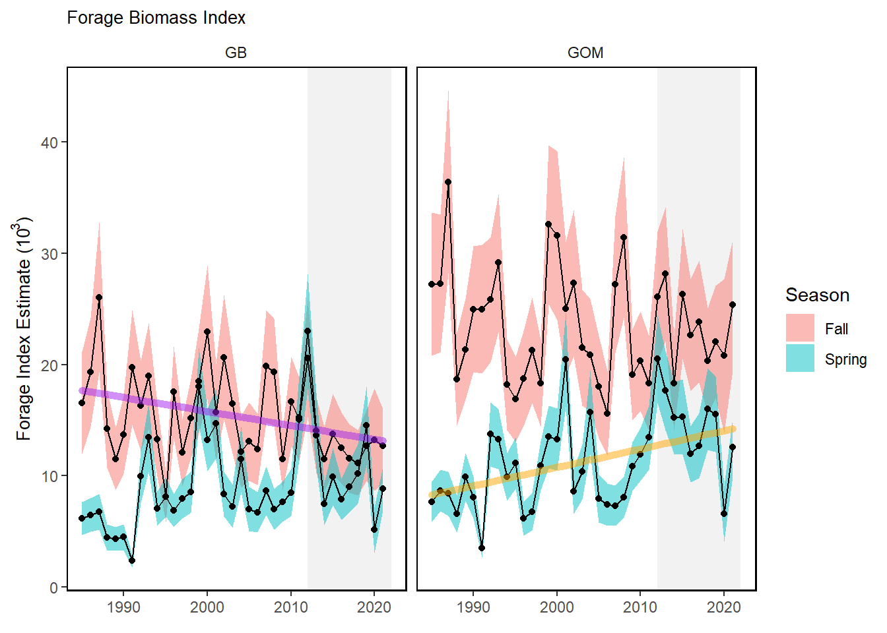

Macrofauna GB and GOM
Trend lines are shown when slope is significantly different from 0 at the p < 0.05 level. An orange line signifies an overall positive trend, and purple signifies a negative trend. To minimize bias introduced by small sample size, no trend is fit when N < 30. Dashed lines represent mean values of time series unless the indicator is an anomaly, in which case the dashed line is equal to 0. Shaded regions indicate the past ten years. If there are no new data for 2018, the shaded region will still cover this time period.
New England
Surveys
NEFSC BTS

Spring (left) and fall (right) surveyed biomass in the Gulf of Maine. Data from the NEFSC Bottom Trawl Survey are shown in black

Spring (left) and fall (right) surveyed biomass in the Georges Bank. Data from the NEFSC Bottom Trawl Survey are shown in black
NEFMC Benthivores in MAB

MA inshore survey

Spring (left) and fall (right) surveyed biomass from the Massachusetts state inshore bottom trawl survey.
ME/NH inshore survey

Spring (left) and fall (right) surveyed biomass from the ME/NH state inshore bottom trawl survey.
Proportion managed species in NEFSC BTS
Survey Shannon Diversity

Decresing trend in GB FALL.
Expected number of Species


Productivity anomaly

Small fish per large fish biomass anomaly in Georges Bank from BTS.

Small fish per large fish biomass anomaly in the Gulf of Maine from BTS.
Recruitment Anomaly for NE Stocks from Stock Assessments.
Condition factor
Condition factor for species sampled in the Gulf of Maine.
Condition factor for species sampled in Georges Bank.
Stomach Fullness

Stomach Fullness Anomaly in New England.

Stomach Fullness Anomaly in New England.
Larval diversity

GOM Common Tern
2020 was a challenging year for terns raising chicks - although diet composition was pretty similar to the long term average the quantity of food readily available was apparently less than normal, particularly around the time of chick hatching (confounded a little by cold, wet weather) and when chicks would normally be close to fledging (mid-late July). Our anecdotal observations of feeding rates were low at both those times.

Shannon diversity of common tern diets observed at nesting sites in Gulf of Maine. Diversity of common tern diets has been predominantly above the long-term mean since 2006.

Prey frequencies in the diets of common tern observed at seven different islands in Gulf of Maine.
Common tern sampling sites

Locations of the seven sampled common tern nesting sites in Gulf of Maine (EER = Eastern Egg Rock, JI = Jenny Island, MR = Matinicus Rock, OGI = Outer Green Island, PINWR = Pond Island National Wildlife Refuge, SINWR = Seal Island National Wildlife Refuge, STI = Stratton Island).
Common tern productivity

Mean common tern productivity at nesting sites in Gulf of Maine. Error bars show +/- 1 SE of the mean.

Forage Index

Observed Shark Numbers

Seal Pups

Pup counts at the 4 modeled sites: Monomoy, Muskeget, Nomans Land, and Seal. Left represents absolute counts; right represents natural log counts.
GOM Long-Line Survey
Black Belly Rose
Sandlance